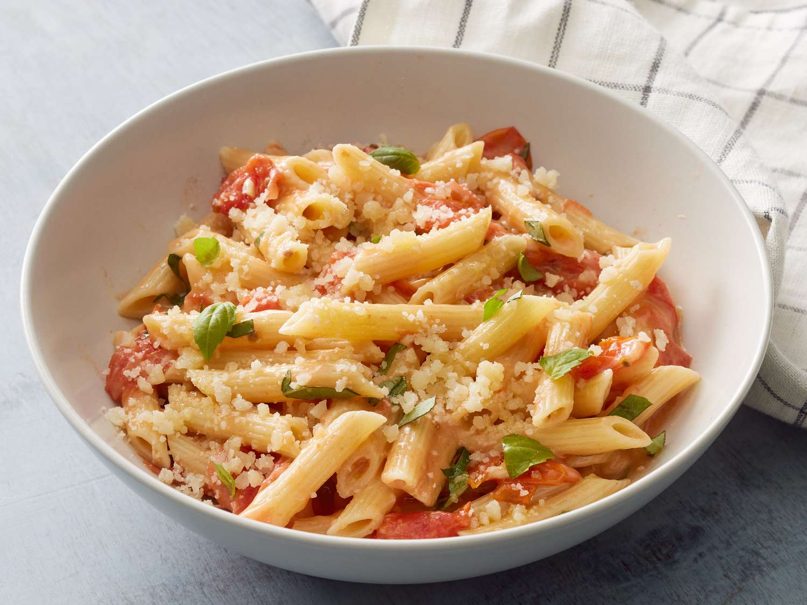

Penne Pasta Recipe

Description
This penne pasta is a Mediterranean-style family staple. Use 2 tablespoons olive oil if basil oil is unavailable.
Ingredients -
- 1 (8 ounce) package penne pasta
- 1 tablespoon basil oil
- 1 tablespoon olive oil
- 3 cloves garlic, minced
- 1 pint grape tomatoes, halved
- 1 cup shredded pepper Jack cheese
- 1 cup shredded mozzarella cheese
- ¼ cup grated Parmesan cheese
- 1 tablespoon minced fresh basil
Steps -
- Gather all ingredients.
- Bring a large pot of water to a rolling boil over high heat. Cook pasta in boiling water until cooked through but still firm to the bite, about 10 minutes. Drain and set aside.
- Heat both oils in a large skillet over medium-high heat. Add garlic and cook until soft, 1 to 2 minutes.
- Add tomatoes, reduce heat to medium, and simmer for 10 minutes.
- Stir in pepper Jack, mozzarella, and Parmesan cheese.
- When cheese begins to melt, mix in cooked penne pasta
- Season with fresh basil.